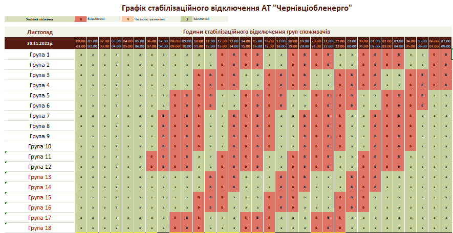

ГРАФІК СТАБІЛІЗАЦІЙНИХ ВІДКЛЮЧЕНЬ
Графік стабілізаційних відключень вводять за розпорядженням державної компанії НЕК «Укренерго» відповідно до оперативної ситуації в енергетичній системі України. Спрогнозувати впровадження таких графіків заздалегідь неможливо.
В умовах жорстких обмежень дозволеного навантаження для області, вкрай важко працювати за графіками стабілізаційних відключень і гарантувати їх дотримання. Проте ми ретельно працювали над формуванням цих графіків і знайшли можливості врахувати ваші зауваження та пропозиції. А саме, ми розробили новий графік, у якому розширили діапазон груп з 12 до 18-ти. Новий формат дасть можливість більш гнучко регулювати навантаження і дозволить не допускати довготривалих перерв. Крім того, ми вирішили виокремити місто Чернівці у блок споживачів, який буде об'єднувати шість груп (від 13 до 18- групи). Тож просимо мешканців міста уважно переглянути нову структуру графіка скориставшись пошуком, щоб визначити до якої групи входить та чи інша адреса.
Важливо! Електроенергія може бути відсутня також і з інших причин, наприклад через аварійні ситуації, ремонт в мережах або несправну проводку в оселі.